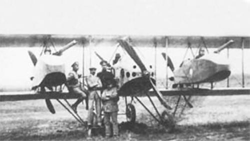

Анатра ДЕ

- Разработчик: Анатра
- Страна: Россия
- Первый полет: 1916
- Тип: срений бомбардировщик
Трехмоторный четырехместный самолет "Анатра ДЕ" (или "Анатра Д" трехмотрооный) предполагалось использовать в качестве
бомбардировщика, с максимальной бомбовой нагрузкой по проекту до 400 кг.
Он представлял собой увеличенный в размерах "Анаде", у которого основным являлся двигатель "Salmson" 140 л.с. в носовой
части фюзеляжа. В межкрыльевом пространстве с каждой стороны устанавливались два ротативных двигателя "Le Rhone"
мощностью 80 л.с., с толкающими воздушными винтами. Двигатели "Le Rhone" крепились к мотогондолам, в передней части
которых размещались воздушные стрелки. Третья стрелковая установка для обороны задней полусферы оборудовалась в фюзеляже.
Таким образом, три воздушных стрелка обеспечивали почти круговую оборону самолета.
Предполагалось, что "Анатра ДЕ" к цели будет лететь на трех двигателях, а обратно, с уменьшенной нагрузкой, на одном двигателе
"Salmson".
В первом испытательном полете, состоявшемся 23 июня 1916 года самолет потерпел аварию на посадке. Была повреждена
задняя часть фюзеляжа, хвостовое оперение и толкающие воздушные винты. Признавалось, что аппарат требует значительных
доработок, которые в конечном счете не производились и "Анатра ДЕ" не восстанавливался.
| Летно технические характеристики | |
|---|---|
| Модификация | Анатра ДЕ |
| Размах крыла, м | 16.00 |
| Длина, м | 9.00 |
| Высота, м | |
| Площадь крыла, м2 | 50.00 |
| Масса, кг | |
| - пустого самолета | 1527 |
| - нормальная взлетная | 2347 |
| Тип двигателя | 1 ПД Salmson + 2 ПД Le Rhone |
| Мощность, л.с. | 1 х 140 + 2 x 80 |
| Максимальная скорость , км/ч | 160 |
| Крейсерская скорость , км/ч | 120 |
| Скороподъемность, м/мин | |
| Практическая дальность, км/td> | Практический потолок, м |
| Экипаж, чел | 4 |
| Вооружение: | три 7.7-мм пулемета Lewis - два передних и один задний на подвижной турели до 400 кг бомб |